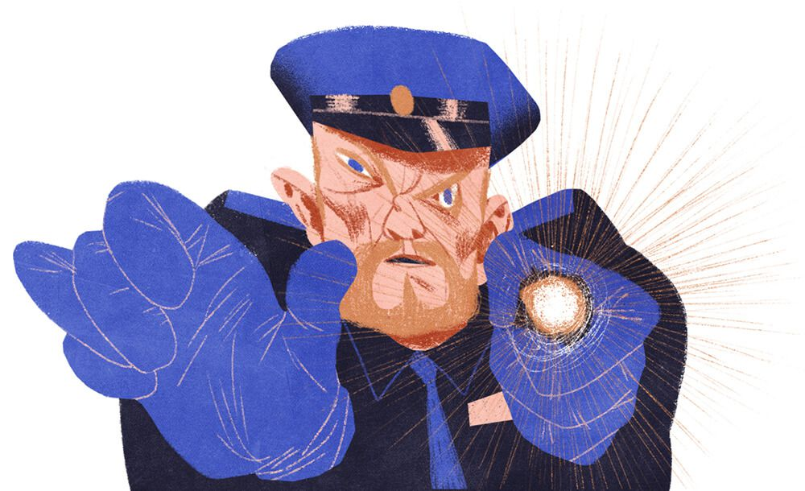
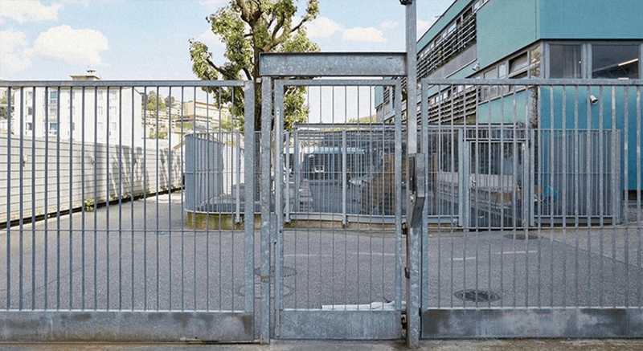
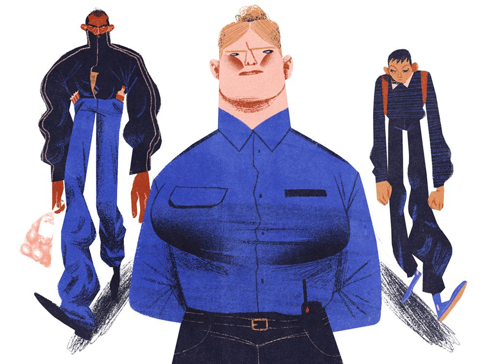
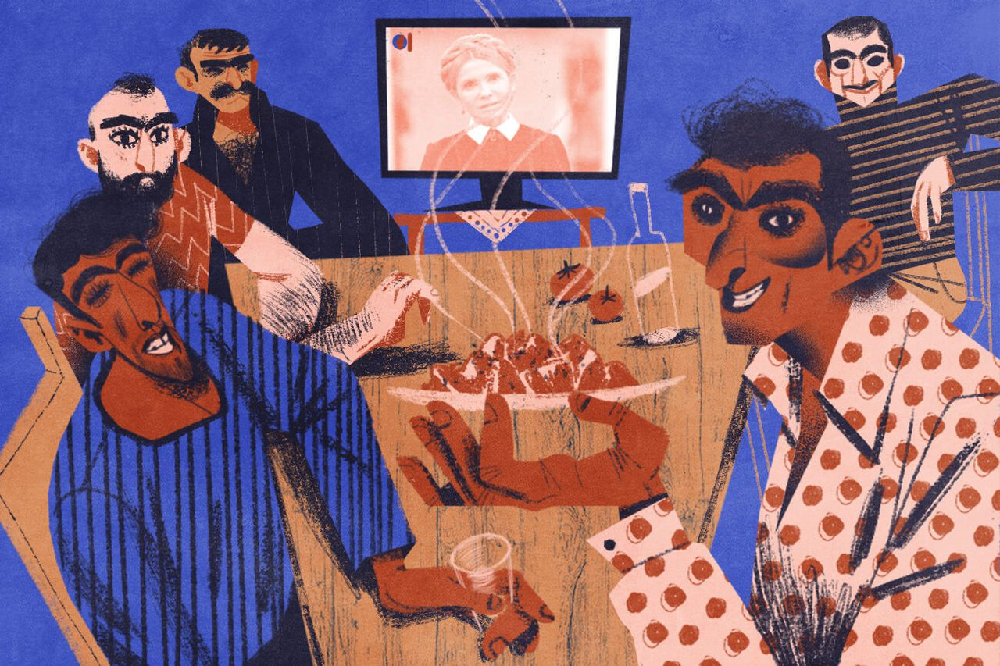
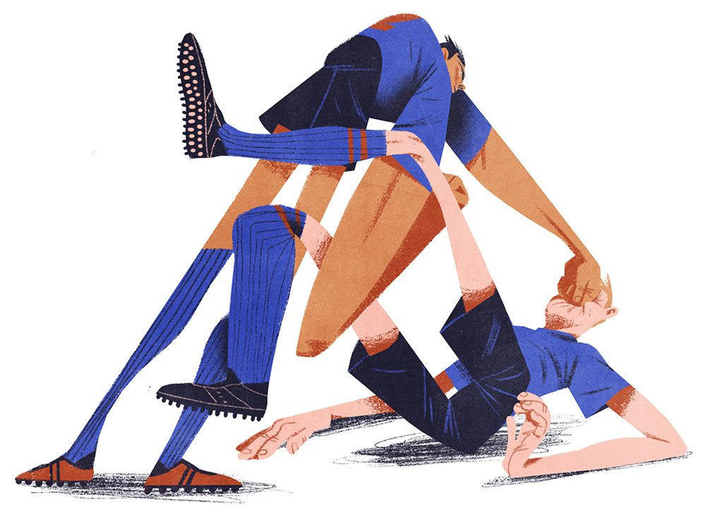
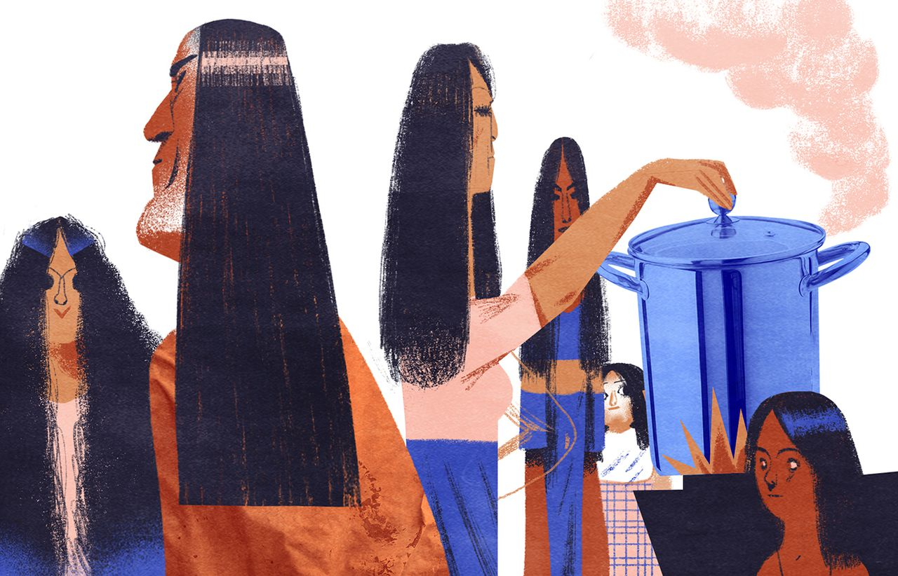

Illustration: Maria Shishova
Illustration: Maria Shishova
Следуя инструкциям Василиса, мы купили два вечерних билета до Страсбурга. Ночью пограничники не так бдительны, объяснил болгарский консультант, поэтому шанс проверки паспортов на границе с Францией существенно снижается.
Хотелось в это верить, потому что с визой, просроченной на полгода, ничего хорошего нам не светило.
До вокзала мы дошли пешком. Несмотря на дождь и ноябрьский ветер, Дима и Сурен решили проводить нас до самого автобуса. Напоследок мы обменялись контактами: Дима дал свой email, а Сурен — номер испанского мобильного.
— Я скоро к вам приеду, — сказал Дима.
— Мужики, я хочу, чтоб всё у вас там было заебись! Ромчик, дай я тебя поцелую, — полез обниматься Сурик, — не прощаемся.
Предстоящая авантюра вызывала во мне тревогу.
— Во сколько нам примерно выходить? — спросил я шёпотом отца, когда мы уже уселись в автобус.
— Taci din gură… — прошипел он в ответ. — Dimineața.
Порой, когда отец злился, он переходил на румынский и думал, что знание языка передалось мне по крови.
Я не знал точного перевода этой фразы, но можно было догадаться, что разговор у нас не завяжется.
Сам он был румыном от силы на четверть, но всю жизнь гордился принадлежностью к «европейцам», заставлял нас с сестрой отмечать какие-то румынские праздники и желать ему спокойной ночи исключительно на румынском.
Через несколько часов в автобусе зажёгся свет: мы прибыли к границе. Отец ткнул меня в бедро. Я кивнул. Настало время сыграть в спящих.
В автобус вошёл пограничник и медленно направился в нашу сторону, рассматривая пассажиров и мельком проверяя документы.
«Ну, вот нам и конец», — подумал я, зажмурив глаза.
Приближение французского госслужащего можно было почувствовать кожей. Меня обдало тончайшими потоками воздуха, и я понял, что он прошёл мимо, не задерживаясь возле наших сидений.
Франция поразила мой юный мозг красотой дорог: идеальный чёрный асфальт, словно после дождя, и свежая тёмно-жёлтая разметка.
Согласно инструкциям Василиса, мы десантировались в пятидесяти километрах от швейцарской границы, в посёлке с неприлично длинным названием, которое я даже не пытался прочитать.
Теперь нам следовало купить билеты на электричку до Женевы. Согласно тем же инструкциям, мы прибыли на этот вокзал в воскресенье. Кассы не работали, но работал автомат с полностью французским интерфейсом. Отец долго пыхтел, пытаясь разобрать непонятные слова. «Сына, румынский язык — это основа всех романских языков, поэтому, если понимаешь румынский, то поймёшь и французский». С этой верой он потел у автомата, пока стоявший в очереди мужчина учтиво не кашлянул в кулак.
— Пардон, пардон… — закрутился отец.
Дальше прозвучали какие-то слова о помощи.
Пожилой француз рассматривал нас с нескрываемым подозрением. Что-то ему подсказывало, что мы направляемся в Женеву не для участия в саммите ООН.
Следующий в очереди мужчина был моложе и дружелюбнее: мы получили заветные чеки и через пару часов сели на электричку.
Ещё через час пути мы вышли из пустого вагона. Конечная.
По дороге в Женеву нам не встретилось ничего напоминающего таможенный контроль. Мы удивлённо осмотрелись: вместо вокзала — небольшая будка с закрытой дверью. Никаких вывесок. Никаких людей. Ничего. Только кусты, деревья и пару лавок.
— Это Женева?
— А ч-ч-чёрт его знает… — растерянно ответил отец.
Мы не спеша пошли в неизвестном направлении, и спустя сто метров я подобрал маленькую серебристую монету. Рассмотрев её внимательно, я передал отцу:
— На евро не похоже.
— Это франк. Швейцарский франк. Мы на месте.
Трудно было поверить, что мы попали в один из самых богатых городов Европы без каких-либо документов, просто сев на электричку. Слегка обрадовавшись нашей удали и мысленно отблагодарив Василиса, мы присели на лавке и перекусили оставшимися бутербродами.
Однако в этом изящном плане оставался ещё один пункт: теперь мы должны были найти полицейского и сообщить ему о нашей беженской доле. Эта задача потребовала больше времени, чем планировалось: мы гуляли по фешенебельным районам Женевы и не могли найти ни одного стража порядка.
В конце концов на центральном вокзале мы обнаружили дверь с вывеской Police и сдались в объятия дежурному.
К счастью, он говорил по-английски и сказал, что в воскресенье такие вопросы не решаются, дал нам адрес бесплатной ночлежки и порекомендовал вернуться завтра для получения дальнейших инструкций.
Женевский приют оказался худшим местом, в котором мне когда-либо приходилось ночевать.
Маленькая комната, состоящая из четырёх двухъярусных кроватей, была забита пьяными цыганами, а их потасканная обувь и грязные носки валялись чуть ли не на наших спальных местах.
«Привет, Швейцария», — подумал я про себя, свернулся в позу эмбриона и постарался поскорее уснуть.
Утром полицейский посадил нас на поезд и велел выйти на станции Vallorbe.
Мы прибыли на место. Буквально в ста метрах от вокзала возвышалось безликое четырёхэтажное здание, напоминающее военную академию. По периметру можно было заметить забор с колючей проволокой.
— Нам сюда, — сказал отец. — Ты помнишь, что говорить?
— Лучше напомни.
— У меня отжимали бизнес. Ты занимался футболом, по дороге на тренировку тебя подрезала бэха, вышли люди и угрожали сломать ноги. Всё. Больше ты ничего не знаешь, остальное я сам расскажу.
— Ладно…
В «приёмной» нас встретили холодно, записали анкетные данные и велели ждать.
Через час мрачный мужчина в форме отвёл нас в пустую комнату с белыми стенами, вывалил всё из сумок и принялся изучать содержимое. Я сильно нервничал, потому что там было что-то, что находить ему не следовало: отцовский загранпаспорт с просроченной испанской визой. Состыковать этот документ с его беженской легендой не смог бы даже Остап Сулейман Берта Мария Бендер-бей.

Illustration: Maria ShishovaПаспорт был спрятан между моими футбольными щитками, плотно склеенными друг с другом липучками.
В комнату вошёл ещё один служащий, они вместе закончили осмотр, после чего развели нас по разным комнатам.
Там мне жестами было велено раздеться догола, развернуться к стене и раздвинуть ноги. Служащий в перчатках и с фонариком осмотрел мой задний проход.
Тогда я ещё не знал, что именно в прямой кишке провозят наркотики выходцы из разных неблагополучных стран, и весь этот принудительный эксгибиционизм почему-то выбил меня из шаткого душевного равновесия.
Именно здесь развеялись мои последние фантазии о счастливом европейском будущем и началась настоящая меланхолия.
Нам выдали карточки с идентификационными номерами и провели внутрь.
За исключением мелких деталей, мы будто попали в тюрьму из американских фильмов. Столовая с пластиковыми разносами, разделёнными для удобства на секторы для разных блюд; огромные спальни, набитые двухъярусными кроватями; во дворе — ограждённая колючей проволокой баскетбольная площадка, на которой играли чернокожие.
Как и в американских фильмах, там не было четырнадцатилетних пацанов, но было много интернациональной сволочи, как и положено в местах, из которых нельзя выйти без разрешения людей в форме.
У мусульман шёл месяц Рамадан. Верующих было так много, что для ежедневных молитв была выделена отдельная комната — прямо напротив той, в которой поселили нас, из-за чего весь проход был заставлен их обувью.
Я ушёл в себя и воспринимал происходящее как в тумане.
Отец познакомился с грузинами и выведал кое-какую информацию:
— Отсюда распределяют дальше, по кантонам. Отправить могут куда угодно — и в Цюрих, и в Берн, и в Лозанну. Говорят, что в немецких кантонах хуже всего, но грузины эти мутные, не особо я им верю.
— Ага. Мне тоже не нравятся.
— Ну ты носик-то не вешай. Всё нормально будет, нужно немножко потерпеть. Тут долго никого не держат.
— А долго — это сколько?
— Долго — это долго. Балдей и читай книжку.
Дни были наполнены унынием и лёгкой тревогой. В комнате день и ночь стоял странный сладковатый запах. Все были как на иголках: мужчины из разных стран и с разной судьбой не отличались особенным дружелюбием, поэтому периодически возникали конфликты с воплями на непонятных мне языках. До драк доходило редко.
За себя я особенно не боялся: всё-таки со мной был отец, который, в случае чего, был бы только рад сломать несколько негодяйских носов. Больше всего меня страшили огромные мрачные африканцы и некоторые грузины, с их бледными осунувшимися лицами и сумасшедшими глазами.
Каждый вечер на информационной доске в столовой вывешивался список счастливых номеров, которым на следующий день предстоял трансфер в другой лагерь.
Через неделю после заселения, возвращаясь с ужина, мы обнаружили там свои номера, и ранним утром меня, отца и ещё десяток любителей бесплатного жилья повезли автобусом на другой конец Швейцарии — в итальянский кантон Тичино.
По пути я поражался красоте и ухоженности этого удивительного государства. Складывалось ощущение, что швейцарцы следят за каждой травинкой, за каждым сантиметром своей территории. Будто сама природа спроектирована здесь по чьему-то разумному плану: сплошные горы, озёра и леса. И люди, чьи города и деревушки не только не портят, но и украшают эти безупречные ландшафты.
Отец был рад нашему распределению в итальянский кантон, потому что близость румынского и итальянского языков, полагал он, позволит ему избежать языкового барьера.
Я же особых поводов для воодушевления не видел: нас поселили в каком-то детском саду, «переоборудованном» для беженцев и ограждённом двойным железным забором.

Большую часть помещения занимала столовая, мы же располагались в тесных комнатушках, каждая из которых была плотно заставлена четырьмя двухъярусными кроватями.
В этом лагере было больше духа демократии: никаких личных ИНН и питания с подносами — еду здесь сервировали на обычных тарелках. Кроме того, нам дозволялось покидать территорию лагеря один раз в день для прогулок по городу, но не более чем на час, и возвращаться не позднее 21:00.
Нашими соседями по комнате оказались грузины. Их было очень много, по удельному весу среди всех беженцев они могли конкурировать только с сомалийцами. Я не мог понять, что за дьявол таится в этих людях. Большинство грузин вели себя открыто и дружелюбно, но какие-то детали их поведения меня интуитивно настораживали.
Через несколько дней нас с отцом повезли на первое интервью для получения статуса беженцев. До этого момента никто из швейцарцев причинами нашего визита в страну не интересовался.
Трудно было определить, куда мы попали. Помещение напоминало полицейский участок. Отца с переводчиком повели на интервью, а меня заперли в пустой, полностью белой комнате размером в пять квадратных метров.
Часов у меня не было, но по ощущениям я провёл там не меньше семнадцати лет. В полной тишине я ходил из угла в угол и потихоньку сходил с ума.
Почему так долго? Что там рассказывает отец? Что, если наши показания не будут совпадать?
Ну, с последним вопросом всё понятно: родитель и даст мне подзатыльник. А потом нас депортируют. Депортация меня волновала меньше, чем отцовский гнев, потому что такой косяк он вспоминал бы мне до конца жизни.
Когда я уже начал нежно постукивать макушкой о белую стену, меня, наконец, вызвали, задали несколько вопросов и быстро отпустили. Сложилось впечатление, что легенда о донецких рэкетирах не произвела на них впечатления, и всё, что надо было узнать, они уже узнали у автора сочинения.
Нас отвезли обратно в лагерь, и мы сразу же вышли на прогулку. Отец был возбуждён:
— Что ты им сказал?
— Ну, всё по плану. Угрожали, на улице подрезала бэха…
— Больше ничего не наплёл?
— Да они ничего и не спрашивали. Я просто не пойму, зачем нам было уезжать, если «бизнес» всё равно им достался?
— Ты меньше умничай! Я им уставные документы показал, печать, все дела, — у отца действительно была фирма, которую «отжали», только было это ещё в 90-х, — всё рассказал как было, даже выдумывать особо не надо. Я думаю, нормально у нас всё будет, — подытожил он с горящими глазами.
— А когда ответ?
— А хер его знает. Некоторым через месяц дают, а некоторых год собеседуют.
— Классно… — пробурчал я уныло.
— Не скули. Подожди тут, я сейчас в магазине что-нибудь вкусненькое бомбану.
Я часто злился на родителя, но в этот момент от гнева у меня даже перехватило дыхание. Что с нами будет, если из-за вкусненького его поймают с поличным? Однако отговаривать отца не имело никакого смысла: я прекрасно понимал, что его основная цель — это бутылка.
Через пятнадцать минут нервного ожидания он деловито вышел из супермаркета.
Мы отошли за угол.
— Жри, — с любовью сказал отец, протягивая мне шоколадный батончик, после чего достал из внутреннего кармана чекушку Gordon’s и блаженно приложился к горлышку. — Всё будет нормально, сына. Прорвёмся.
Через две недели, первого декабря, в детском саду для беженцев, нам выдали именные пластиковые удостоверения с фотографиями и повезли на новое место жительства, в городок Лугано.
По дороге я вспоминал басни Василиса. Нужда в комфортных, человеческих условиях проживания, которую я подавлял с момента первой ночи на вокзале в Барселоне, вырвалась наружу, и я ненадолго утонул в фантазиях. Я воображал себе приличную квартиру, которую распирающая от золота Швейцария выделит несчастной молодой семье, гонимой злыми бандитскими ветрами из родной страны.
Новым местом жительства оказалась комната в одноэтажных деревянных бараках в нескольких километрах за чертой города. Там были общая кухня, общий зал с телевизором, общий душ и общие туалеты.
Это было убогое, плохо обставленное общежитие, населённое разношёрстным сбродом со всех уголков мира. Единственным преимуществом было то, что теперь никто не контролировал наше местонахождение: мы могли покидать бараки и возвращаться обратно в любое время суток.
Ни о какой транспортной связи с городом не было и речи. Единственный путь в город — пешком, полчаса по узкой унылой обочине, с оглядкой на проезжающие мимо автомобили.
Моей не сформировавшейся психике явно не хватало мощностей, потому что такой очевидный намёк на нежелательность нашего пребывания в стране нанёс непоправимый урон по моим морально-волевым ресурсам. Я дошёл до последней стадии уныния.
Отец же не терял бодрости духа. Он одобрительно осмотрел спартанское убранство комнаты:
— Стол есть, шкаф есть, нормальные постели. Что ещё надо?
Стиснув зубы, чтобы не расплакаться, я молча смотрел в потолок.
— Правильно. Пожрать надо. Тут нас никто уже кормить не будет. Пойдём в магазин, там на выезде из города я Carrefour видел.
— Не хочу никуда идти. Я посплю лучше.
— Давай вставай, надрыхнешься ещё. Пойдём воздухом подышим, — сказал отец и кинул мне на кровать зимнюю куртку.
Отец вытащил меня из анабиоза не только из благих намерений: ему нужен был подельник.
Всё дело в том, что ежемесячное пособие, которое нам выдали накануне, составляло по несколько сотен франков на человека. Учитывая местные расценки, нам нужно было питаться только рисом и водой, чтобы этих денег хватило хотя бы на пару недель.
После тесного общения с ворами-грузинами мой родитель смотрел на будущее с оптимизмом:
— Здесь все воруют. Ещё проще, чем в Испании. Швейцарцам по барабану, у них застраховано всё.
— Мы весь месяц воровать будем?
— У тебя есть другие предложения? — злобно гаркнул отец, сжав кулаки.
Опустив головы, мы быстро шагали по обочине. У меня мёрзли руки и при каждом выдохе из носа шёл чуть заметный пар. Я ненавидел отца, себя, наступившую зиму и весь земной шар.
— Нам не надо тягать что-то каждый день, — продолжил он раздражённо. — Мы сейчас упакуемся плотно — и нам этого на неделю точно хватит.
— А упаковывать куда?
— Куда-куда! За пазуху, в карманы, в рукава. Не дёргайся только, делай всё спокойно — и никто нас не заметит.
Carrefour представлял из себя огромный высокий амбар, наполненный бесчисленными рядами с товарами и снующими между ними толпами людей. Первый раз в жизни я попал в такой масштабный гипермаркет. Казалось, что весь город приехал сюда за покупками.
Мы приступили к действиям. Отец деловито запихивал продукты то к себе, то ко мне. Время замедлило ход. Я уже воровал несколько раз по мелочи в Барселоне, но это были трёхминутные налёты на маленькие магазинчики, в которых не было даже камер. Здесь же я поднимал голову — и видел над собой железный каркас, усеянный шарообразными аппаратами для слежки.
Мне было страшно, и я хотел поскорее уйти, однако отец поймал кураж. Складывалось ощущение, что он решил затариться сразу на всю зиму.
От набитых вокруг пояса продуктов у меня начали спускаться штаны.
— Па, идём, мне уже некуда.
— Тихо. Кофе ещё. И на «отбивку» ещё что-то надо взять.

Illustration: Maria Shishova«Отбивкой» на воровском жаргоне обозначались недорогие продукты, которые для отвода глаз желательно было оплатить на кассе.
Спустя тридцать минут мучительного путешествия мы, наконец, стали в очередь к кассиру. Я нервничал, потел и с трудом сдерживал предательски сползающие брюки. Из официальных покупок у нас в руках была пачка овсянки и килограмм яблок, но даже они были взвешены с применением мошеннических уловок.
Рассчитавшись за «отбивку», мы пошли к выходу, где нам перегородила путь суровая женщина со скрещёнными за спиной руками. Вместе с охранником она провела нас на второй этаж, в кабинет с прозрачными стенами. Отсюда открывался отличный вид на торговые ряды, и при внимательном наблюдении были видны все наши злоключения.
Нам предложили выложить на стол все спрятанные продукты в добровольном порядке. Под осуждающими взглядами двух охранников и женщины-менеджера мы неторопливо вытаскивали один товар за другим. Позор длился несколько минут, после чего охранник произвёл лёгкий обыск, по-милицейски ощупав ладошками нашу одежду.
Дальше последовали какие-то разговоры на итальянском, английском и румынском, из которых я мог разобрать только слово «Police». Женщина разглядывала наши беженские удостоверения, охранник куда-то звонил по стационарному телефону, отец виновато бормотал извинения, а я просто смотрел сквозь стену и слушал, как бешено колотится сердце.
Спустя десять минут женщина неожиданно сжалилась и отпустила нас при условии, что мы больше никогда не вернемся в Carrefour.
Забрав овсянку и яблоки, мы молча зашагали в сторону бараков. Через пять минут отец как ни в чём не бывало похлопал меня по плечу:
— Ну, ничего страшного, сына, не смертельно.
Я покачал головой.
— Смотри сюда, — сказал он радостно и вытащил из рукава большую пачку растворимого кофе.
На следующий день я слёг с жаром. Отец провёл глубокую вылазку в город, нашёл супермаркет попроще, где без проблем раздобыл мне орехов и шоколада. Из развлечений у меня была всё та же книга Ильфа и Петрова, которую я перечитывал по десятому кругу, а также небольшой телевизор в столовой, где беженцы смотрели канал Euronews на английском языке.
Благодаря ему мы узнали, что в это время в Киеве проходит Оранжевая революция. Я смотрел на кадры забитого под завязку Майдана с открытым ртом:
— Охренеть.
— Янука гонят? — удивлённо прокомментировал отец.
Через несколько дней мне стало ещё хуже, температура не спадала, появился кашель и прочие признаки гриппа.
К счастью, у входа в бараки была специальная каморка, в которой дежурила строгая пожилая швейцарка. Отец позвал её в нашу комнату, она потрогала мой лоб, вернулась к себе и вызвала скорую со служебного телефона.
Меня отвезли в швейцарскую клинику. Не в какую-то специальную клинику для беженцев, а в настоящую больницу Это путешествие стало для меня экскурсией в мир Золотого миллиарда. Я рассматривал сверкающее убранство помещения такими глазами, словно очутился в будущем. Меня осмотрели с помощью новейших диагностических аппаратов и выписали специальный рецепт на лекарства, по которому можно было получить препараты бесплатно.
Отец сходил в ближайшую аптеку, и мы, подгоняемые лёгким морозом, резво зашагали обратно в сторону бараков Третьего мира.
Пока я пил порошки и приходил в себя, отец изучал Лугано. Этот небольшой городок площадью около тридцати квадратных километров можно было обойти вдоль и поперёк за пару дней. Как и многие города в Швейцарии, располагался он вдоль живописного озера и был окружён горным хребтом.
Отец нашёл несколько мелких супермаркетов, из которых можно было без проблем выносить продовольствие, и библиотеку с одной-единственной книгой на русском языке — «Преступление и наказание», которую он торжественно вручил мне после возвращения.
— Тоже стащил?
— Да не хватало ещё! Там регистрируешься, и тебе дают вот такую карточку, — он протянул мне свой читательский билет. — С ней, кстати, можно в интернете лазить. Час в день. Там компы стоят.
— А вот это круто!
Я взял книжку и поблагодарил отца.
— Так что как очухаешься — дуй в библиотеку и Димке напиши. Он же тоже ехать сюда собирался. Расскажешь, что к чему. Может, передумает.
Он достал из заднего кармана джинсов карту города, развернул её на столе и подозвал меня. Любовь к географии и умение неплохо ориентироваться на местности были одними из его лучших качеств.
— Мы — здесь. А вот тут — библиотека.
— Ну мы же первый раз вместе сходим?
— Да какая разница? Ты запоминай, пригодится. А вот тут стадион, кстати. Недалеко от нас.
На этом месте я недовольно вернулся в постель и уткнулся в книгу. Меньше всего мне сейчас хотелось думать о продолжении футбольной карьеры: любая мысль о тренировках вызывала отвращение.
— Я посмотрел, как они занимаются. На синтетике бегают, хорошая поляна. Ребята крепкие, но ничего особенного. Можно их повозить.
— Мне ещё не очень.
— Я понимаю. С тренером поговорил — нормальный мужик, молодой. Он тебя на следующей неделе ждёт. Тренировки — понедельник, среда, пятница в шесть вечера.
Львиную долю беженцев, населяющих наши бараки, составляли всё те же грузины. Каждый их день проходил по единому воровскому распорядку: утром они уходили в город, весь день делали дела, а к вечеру собирались большой компанией в столовой, сдвигали столы, пили водку, закусывали жареной свининой с луком и отчитывались о проделанной работе. Эти ребята грабили всё, что можно ограбить: от кошельков добропорядочных граждан в общественном транспорте до бутиков Armani и ювелирных салонов. Особой удалью считалось украсть швейцарские часы: эти магазины охранялись с особой тщательностью.
Тем вечером я выбрался из комнаты, чтобы посмотреть Euronews. Ребята, как всегда, что-то бурно обсуждали.
— Эй, биджё, как тебя зовут?
— Рома.
— Рома, давай покушай мяса. Худой такой — смотреть больно.
— Давай-давай, не стесняйся, — загудели остальные.

Illustration: Maria ShishovaЯ не знал, как себя вести с этими людьми. Всё-таки они были настоящей мафией и вызывали у меня некоторые опасения. Отец, хоть и поддерживал контакт с грузинами, но водку с ними не пил и держался на расстоянии.
Пока я раздумывал над ответом, они уже принесли мне тарелку с несколькими сочными кусками мяса и разрезанным на две части помидором.
— Ты чего, боишься?
— Да нет…
— Не надо бояться, мы детей не обижаем.
Я с удовольствием принялся за шашлык под аккомпанемент воинственных речей Тимошенко. В рубрике Live шли репортажи с прямой речью без перевода: Юлия Владимировна призывала собравшихся на Майдане людей перекрывать дороги и захватывать главпочтампты.
Отцовское помешательство на футболе не отпускало его даже здесь. Я пассивно проявлял своё нежелание идти в новый клуб, но у меня не хватало духа озвучить ультимативный отказ. Я презирал отца за его настойчивость, я презирал себя за немощность и я презирал проклятый футбол, из-за которого мы оказались в этих бараках.
С таким настроением я начал ходить на тренировки в новую команду.
Каждый раз, переодеваясь со сверстниками в раздевалке, я с нескрываемым отвращением наблюдал за их подростковыми забавами. Они обезьянничали, неестественно громко смеялись и кидались друг в друга всем, что попадало под руку. Я даже не пытался ни с кем познакомиться и чувствовал себя как вернувшийся из джунглей Вьетнама ветеран, попавший в компанию ничего не подозревающих детей.
Мой статус белой вороны не мог оставаться незамеченным. Примерно через неделю местный альфа-самец принялся декламировать какие-то оскорбления в мой адрес. Итальянского я не знал и мог только догадываться, что за ересь он сочиняет, но в том, что это касалось моей персоны, не было никаких сомнений: он гримасничал в двух метрах, чуть ли не наступая на мою одежду.
Племя юных футболистов осторожно посмеивалось, ожидая моей реакции.
В Донецке я успел сменить несколько школ и футбольных команд, поэтому подобные ритуалы меня уже давно не удивляли. Неловкость доставлял только языковой барьер, так как я не был уверен на сто процентов в том, что меня оскорбляют. Всё-таки дело было в Швейцарии, и я делал скидку на то, что у местных подростков, может быть, дела обстоят иначе.
Я молча переодевался и собирал рюкзак, стараясь побыстрее покинуть этот зверинец.

Illustration: Maria ShishovaВыходя из раздевалки, альфа-самец крикнул мне в спину:
— Сiao, puttana ucraina!
Теперь все сомнения были развеяны, поэтому я поступил так же, как поступал везде: нанёс обидчику несколько ударов кулаками в район носа.
Не встретив никакого сопротивления, я оставил присевшую на корточки макаку и пошёл восвояси.
С того дня все комментарии в мою сторону прекратились, ребята стали уважительно здороваться и пытаться разведать больше о далёкой украинской культуре.
Всё как везде.
Моя игровая подготовка устраивала тренера, поэтому меня быстро взяли в команду на официальных условиях — оформили удостоверение и выдали фирменную экипировку.
Отец гордился сыном, а я всё чаще фантазировал о том, как однажды утоплюсь в прозрачном озере Лугано.
Зима в бараках проходила размеренно и уныло, но не без сюрпризов. Состав жильцов периодически менялся: кто-то просто пропадал, кто-то переезжал к нам из «детского сада», а кто-то получал путёвку в Рай — ключи от отдельной квартиры в районе города со звучным названием Paradiso. Об этих ключах грезил каждый из беженцев. Грузины, бывавшие там в гостях у более удачливых земляков, говорили, что в таких апартаментах швейцарец жить бы не стал, но тем не менее жильё в городской черте с отдельным туалетом представлялось мне вполне удовлетворительным вариантом. Проблема была в том, что никакой системности в этих переселениях не наблюдалось: кто-то переезжал в Рай через месяц, кто-то через три, а кто-то сходил с ума, так и не дождавшись отдельной квартиры.
В начале января, сразу после наступления 2005 года, огромный африканец Табо принялся еженощно бродить по коридору и выкрикивать какие-то проклятия. Хорошо прислушавшись, можно было даже разобрать в них некоторые английские слова, но общий посыл оставался загадкой. Понятно было только одно — мужчина ищет конфликта.
Подобные сатанинские ритуалы проходили практически без выходных, и никто не мог с этим ничего поделать. Грузины пробовали утихомирить сумасшедшего детину, но в ответ Табо лишь начинал орать ещё отчаяннее.
Он бил кулаками о стену, истошно рыдал и молил о помощи своих воображаемых собеседников. Больше всего я боялся, что однажды он выломает нашу картонную дверь и ворвётся в комнату.

Illustration: Maria ShishovaЖильцы периодически жаловались дежурной, но ей было плевать: на ночь она уезжала домой, а днём африканец смолкал и почти не выходил из комнаты.
Однажды утром я сидел в столовой перед телевизором и уплетал приготовленную отцом пасту, когда из коридора вышел бледный как смерть Табо. В руках он зажал большой кухонный нож. Сумасшедший что-то шептал себе под нос и искал потенциального противника. Хотя в столовой находилось немало кандидатов для жертвоприношения, распознать наше присутствие ему было непросто: у Табо был абсолютно потусторонний взгляд. Казалось, что он видит свою версию реальности.
Затаив дыхание, я проскочил за спиной сумасшедшего и заперся в нашей комнате. Дальше последовали истошные вопли и грохот — по столовой летала мебель.
Спустя полчаса приехали санитары, и вскоре всё, наконец, утихло.
Табо увезли в больницу.
Трижды в неделю я ходил на тренировки, и меня постепенно начали привлекать к субботним матчам. Я выходил на поле и, как сказали бы футбольные комментаторы, просто отбывал свой номер. Тренер зачем-то ставил меня на левую бровку, хотя я был правшой, отродясь не играл на флангах и не отличался высокой скоростью, необходимой для этой роли. Иногда я смещался в центр, где мог обыграть пару человек и исполнить какой-то фокус, но делал это так редко и так неохотно, что всем было очевидно: пацану просто наплевать.
Тренером нашей команды был молодой парень около тридцати лет, в хорошей форме и с горящими глазами. После одной из тренировок он вызвал стоящего у бровки отца на беседу и попытался выяснить, что со мной не так.
Кажется, родитель, наконец, начал подозревать, что я на грани нервного срыва, поэтому он поставил на паузу свои привычные диктаторские методики. Его мотивационные речи стали чуть мягче:
— Сына, я всё прекрасно понимаю, мне тоже тяжко…
— Ага.
— Тренер видит, что ты можешь больше. Неужели не хочется надрать им всем задницы?
— Мне домой хочется.
— Мне тоже много чего хочется. Побегай пока, чтоб хоть форму держать. Скоро переедем, полегче станет.
— Пока мы переедем… — я запнулся от кома в горле и махнул рукой.
— Ладно. Пошли маме позвоним.
В Лугано не было ничего похожего на испанские компьютерные клубы Locutorio, поэтому мы держали связь с Донецком через уличные телефонные кабинки.
Одна из таких располагалась неподалёку от стадиона. Отец вставил карточку и набрал номер. В кабинке мог уместиться только один человек, поэтому я ждал снаружи. Последние созвоны проходили неважно: отец нервничал и часто срывался на крик. Впрочем, голос отец повышал почти всегда, но теперь их разговоры длились не дольше пары минут, после чего он недовольно передавал мне трубку со словами: «Иди поговори со своей мамочкой».
У мамы был испуганный голос. Она волновалась за меня ещё сильнее и не понимала, зачем нам жить в каких-то бараках ради пособия, которого не хватает даже на еду.
Я и сам уже ничего не понимал. Веры в то, что легенда о донецких бандитах обеспечит нам статус беженцев и сопутствующие этому привилегии, у меня не было.
Из всей нашей семьи «верующим» оставался только отец. Он был убеждён в том, что мы получим все необходимые документы, перевезём в Швейцарию мать с сестрой, а я тем временем построю феерическую футбольную карьеру в самом сердце Европы.
К сожалению, отец был бездарным проповедником и не мог вселить веру в чужие сердца.
Зима проходило мягко, температура не прыгала и держалась в районе нуля. Однажды выпавший в начале декабря обильный снег намеревался пролежать в городе до самого марта. Меня поражало, что снег сохранял свою белизну даже у обочин, будто кто-то его специально мыл.
Наступило четырнадцатое февраля. Никто не украшал бараки картонными сердечками и не складывал поздравительные открытки у алтаря любви, однако у меня был свой праздник — день рождения.
Пятнадцатилетие я встретил в столовой, уткнувшись в экран телевизора. За соседним столиком сидели два грузина: молодой Гоча и его товарищ, чьего имени я не знал. С утра пораньше они уже успели наворотить каких-то дел в городе и теперь что-то бурно обсуждали за моей спиной. Я мельком взглянул на ребят — эти двое стильно одевались, не выглядели как типичные жулики и нравились мне больше остальных, хотя Гоча отличался горячим темпераментом.
— Эй, Ррромчик, чего грустишь?
Я пожал плечами.
— Смотри, что у нас есть, — сказал незнакомец и протянул мне новенький CD-плеер Sony Walkman.
Аппарат выглядел солидно. Судя по всему, они украли его из магазина несколько часов назад. Я искренне восхитился хищным дизайном плеера и протянул его назад.
Хочешь? Забирай! — неожиданно сказал Гоча.
— Да ну…
— Бери-бери, я тебе отвечаю.
— Почём?
— Да нипочём, ёбаный в рот! Дар-р-рю!
Я начал лихорадочно прикидывать, чем такие услуги грозят в воровском мире, но от неожиданной радости у меня даже не получилось испугаться.
Ребята довольно улыбались.
— Я тебе ещё нормальные наушники вечером принесу, — сказал Гоча, моргнул и смачно щёлкнул языком.
— И батарэйки, — добавил товарищ.
— И батарэйки, само собой!
Сперва мне показалось, что всё это спланировал отец, но чем лучше я узнавал местных грузин, тем больше понимал их психологию: эти ребята жили одним днём и не делили вещи на свои и чужие, из-за чего их щедрость достигала неординарных высот.
Вот так просто я стал обладателем одного из лучших MP3-плееров на планете — парни не стали бы марать руки ради бюджетных моделей.
Теперь оставалось только раздобыть интересную музыку. Полный радости, я отправился в библиотеку и написал длинный красочный email подруге детства Ренате — с просьбой выслать мне коллекцию MP3-дисков. Она была единственным знакомым человеком в Донецке, у кого был домашний компьютер с пишущим CD-ромом.
Как и в Барселоне, время, проводимое в интернете, вновь стало для меня единственной отрадой. Я с упоением прокачивал своего персонажа в онлайн-игре «Бойцовский клуб», но одного часа в день было явно недостаточно. В поисках дополнительной дозы я бегал глазами по чужим мониторам, и если кто-то вставал раньше, чем заканчивался его час, не завершив при этом сессию, то я тут же ставил на паузу свою и пересаживался за соседний компьютер. К счастью, ни один библиотекарь не следил за происходящим в этой комнате. Интернет для швейцарцев не был роскошью, именно поэтому в городе невозможно было найти ни одного Locutorio, так как каждый гражданин мог позволить себе выйти в сеть из дома.
Посетителей в библиотеке было немного, и большинство из них заходили в интернет совсем ненадолго. Каждый раз, когда какой-то швейцарец забывал завершить свою сессию, я пританцовывал от счастья.
В «Бойцовском клубе» невозможно было переступить определённый уровень героя, не вложив рубли для покупки специальных «артефактов». Я упёрся в потолок, и развиваться дальше было некуда, но меня это не особенно огорчало: в игре у меня появился «друг» из далёкого Санкт-Петербурга, редкие переписки с которым доставляли мне неземное удовольствие. Помимо этого, я вёл корреспонденцию по email с Димой. Тот ещё в начале февраля решил повторить нашу авантюру и поехал в Женеву, несмотря на то, что я всячески пытался его отговорить. Судя по всему, ему удалось добраться до пункта назначения, потому как связь с ним резко оборвалась.
В наших бараках мне катастрофически не хватало общения.
В начале марта в наши загородные нумера переехала большая индейская семья: отец, мать и четверо детей от трёх до десяти лет. Все они перемещались по баракам с каменными лицами, носили длинные прямые волосы до пояса и ежедневно варили рис в десятилитровом чане.
По вечерам столовая представляла из себя психоделическое зрелище: тощие и уродливые сомалийцы, поедающие пальцами какое-то зелёное месиво; молчаливые индейцы, размеренно жующие рис из общей кастрюли; пьющие шумные грузины, на руках которых можно было увидеть свежие следы от внутривенных инъекций.
У меня складывалось ощущение, что ещё совсем чуть-чуть — и меня постигнет судьба африканца Табо.
На следующий день после приезда индейцев все сливы в душевых намертво забились их богатой шевелюрой и вода пошла в коридор.
Я лежал в комнате и подумывал о том, что и сам не прочь отрастить такие же длинные локоны. Тогда я дал себе клятву не стричь голову до тех пор, пока мы не вернёмся в Донецк.
В комнату вошёл подвыпивший отец и сел ко мне на кровать.
— Ну что, сынуля, отмучались!
— Что случилось?
Сделав театральную паузу, он сощурил глаза, и медленно проговорил:
— В понедельник переселяемся в Pa-ra-di-so.
© 2025 Dr.Gavrylin